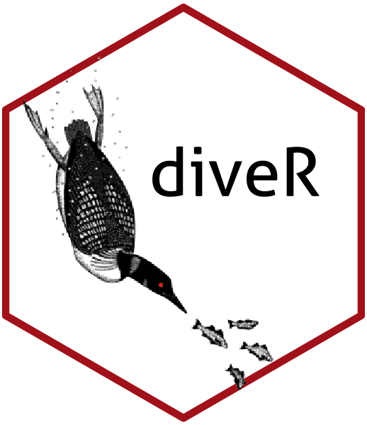

diveR 
diveR is the looniverse of loon related packages, the great northern diver being another name (chiefly British) for the Common loon (chiefly North American).
The packages work together to provide a more complete direct manipulation interactive visualization environment in R.
It is designed for exploratory data analysis, particularly for data having many dimensions, as well as the development of experimental interactive displays.
The package diveR gathers together and installs the related packages.
The packages include:
-
loon.
This is the backbone package that provides the interactive graphics.
-
Provides a rich collection of data sets to illustrate interactive graphics. It also includes several artificial data sets constructed for teaching purposes.
-
Extends
- the base
graphicspackage - the
gridgraphics package - the
looninteractive graphics package
to allow for the layout of alternating 1d and 2d plots.
Provides compact displays for high dimensional data (e.g., where pairs plots would be too small to be informative).
- the base
-
Extends the grammar of the
ggplot2package to accommodate displays such as parallel coordinate and Andrews function plots for high dimensional data. -
Provides a bridge between the elegant but static displays of
ggplot2and the interactive direct manipulation graphics ofloonExtends
ggplot2to provide an grammar of interactive graphics